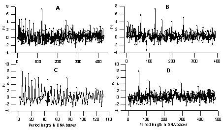

|
Eugene Korotkov[1], Nikolay Kudryaschov[2]
Keywords: latent periodicity, information decomposition, DNA, amino acid sequences
Earlier comprehensive mathematical methods were developed for study of periodicity of continuous and discrete numerical sequences, using Fourier transformation and allowing to define the spectral density of a numerical sequence. However, such application of Fourier transformation demands presentation of a symbolical sequence as a numerical sequence in which the properties of any symbolical text should be displayed unequivocally. The most widely used is the method, including construction from the given symbolical sequence of m sequences consisting of numbers zero and one, and formed according to the law: x(i,j)=1, if the symbol ai occupies a site j, and x(i,j)=0 in all other cases. Here A={a1, a2, …, am} is the alphabet of a symbolical sequence and m is the size of the alphabet of a symbolical sequence. Then the Fourier transformation is applied to each of such numerical sequence and the Fourier-harmonics are calculated, corresponding to i-type symbols, as well as matrix structural factors, corresponding topair correlation of symbols.
However, in our opinion the given method works rather well for study of periodicity of symbolical sequences with relatively short length (which is smaller than the size of the symbolical sequence alphabet). For the periods with the length greater than the size of the symbolical sequence alphabet, there is a possibility of "decomposition” of the statistical importance of the longer periods in favor of the shorter ones. Thus it turns out that statistical importance of the longer period is a kind of "spread" onto the statistical importance of the shorter periods, i.e. there is an effect of attenuation of harmonics with longer periods in favor of harmonics with shorter periods. This effect will be even stronger for cases, where there are several replacements in periodic sequences, - in such sequences periods could not be simply identical.
The main purpose of this work is to show our results for study of the DNA sequences by Information Decomposition (ID) method and to show the existence of the latent periodicity in lot of gene DNA sequences. Main principles of ID method were developed in early publications [1-4]. The ID method is similar to a Fourier transformation method for numerical sequences, but the first one has the following advantages: 1. The calculation of the ID spectrum does not require any transformation of a symbolical sequence to numerical sequences; 2. ID allows revealing both the obvious periodicity and the latent periodicity of a symbolical sequence in which there is no statistically important similarity between any two periods. 3. The statistical importance of long periods is not spread onto the statistical importance of shorter periods; 4. On the basis of the matrix M it is possible to determine the type of periodicity. In this work we present the results of study by ID method the DNA sequences from Genbank, version 122. This analysis permits to find more 1,5x106 DNA sequences with different types of latent periodicity with period from 6 to 200 bases in Genbank. We found more than 5x106 sequences with different types of triplet periodicity also. For details see http://bioinf.narod.ru.

Fig.1. The examples of the latent periodicity of gene sequences.
A - Deinococcus radiodurans gene for c-di-GMP
phosphodiesterase (2867-5239 base pairs) from sequence AE002006.
DNA sequence from 3108 to 3963 bases has the latent periodicity
equal to 120 bases and Z=9,1;B - Methylobacterium extorquens
methanol oxidation gene mxaE (165-1010 base pairs) from sequence
AF017434. DNA sequence form 232 to 1015 bases has the latent
periodicity equal to в 126 bases and Z=7,5. C –
gene coding the high-sulphur wool matrix protein B2A from sheep
(73-561 base pairs) from SHPWMPBB. DNA sequence from 373 to 634
bases has the latent periodicity with the length equal to 5 bases
and Z=8,0; D – Two V-regions from fugu rubripes of the
t-cell receptor alpha-chain gene (13412-13718; 13850-13892) from
FRTCRA1. DNA sequence from 13628 to 14594 bases has the latent
periodicity with the length equal to 59 bases and Z=7,5.
The developed method of information decomposition (ID) of symbolical sequences proved to be capable to reveal latent structuredness of thousand of gene sequences. The results obtained with the method showed that a lot of known genetic texts contain sequences with latent periodicity of various lengths and various types, which could not be revealed earlier. The origin of latent periodicity in genetic texts might be connected both with evolution of genome and protein molecules, and with functional meaning of various sequences. For example, periodicity equal to 21 bases is usually connected with a-helix formation protein molecules. The longer periodicity could be determined by domain organization formation in proteins; it also could be involved in the process of nucleosome binding with DNA. We observed a great variety of period lengths and types in DNA sequences. It is possible to assume that ID method is able to "see" certain structural characteristics of gene sequences, reflecting the gene evolution or spatial organization of the corresponding proteins. In this regard ID is obviously important method allowing to connect the origin of certain protein structures with the presence of certain latent periodicity in corresponding DNA sequences.
[1] Chaley, M.B., Korotkov, E.V., and Skryabin, K.G., 1999. Method reavealing latent periodicity of the nucleotide sequences modified for a case of small samples, DNA Research, 6:153-163.
[2] Korotkov, E.V., Korotkova, M.A., and Tulko, J.S., 1997. Latent sequence periodicity of some oncogenes and DNA-binding protein genes, CABIOS, 13:37-44.
[3] Korotkova, M.A., Korotkov, E.V., and Rudenko, V.M. 1999. Latent periodicity of protein sequences, Journal of Molecular Modelling, 5:103-115, 1999.
[4] Korotkov, E.V., Korotkova, M.A., Kudryashov NA, 2003. Information approach for detection of latent periodicity in symbolical sequences. Molekylarnya Biologya,in press.